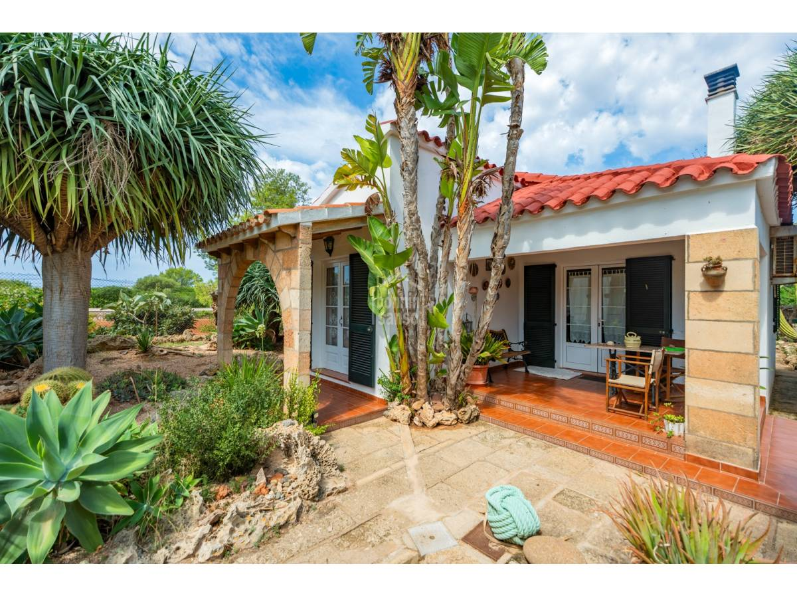

€840.000
Santandria, Ciutadella, Menorca, Spain
Open the listingExact character brief: whitewash menorquina with marès stone pillars, arched porch detail, dark green shutters, terracotta terrace and a built private pool in a mature Mediterranean garden. Price-cut bargain vs prior €892k. Distinct from board santandria-02wo31 (€1.05M / 163 m² / 432 m²).
Opened 12 Sep 2026. Asking 840.000 € (was 892.000 €). 3 beds, 1 bath, fireplace lounge, fitted kitchen + utility, two terraces, single-storey. Habitable now.